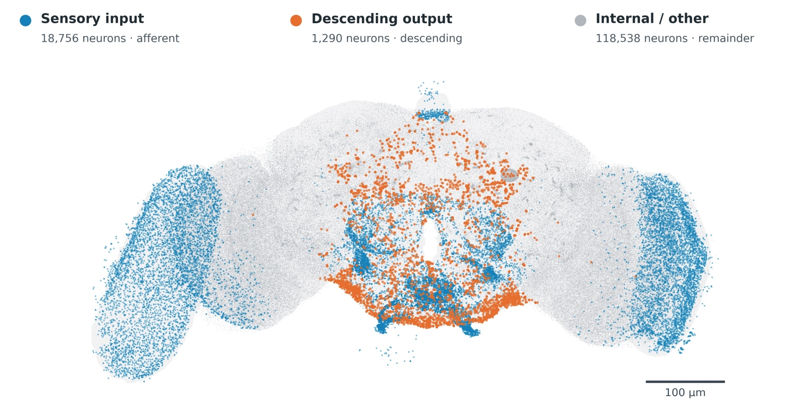
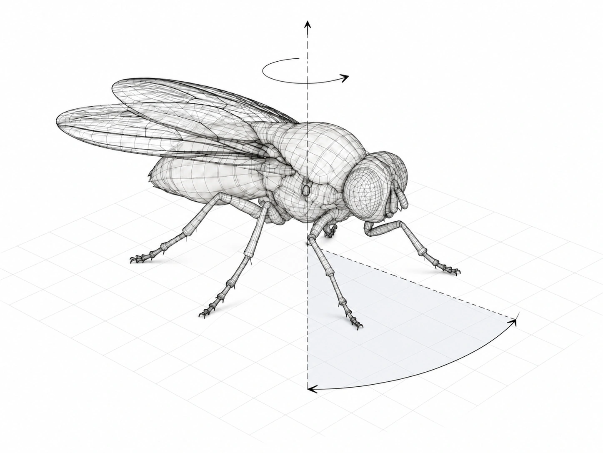

Activity during turning
Ascending neurons show 1.46× activity enrichment relative to the input-population average, with enrichment in all 24 training seeds.
Tsinghua University
1 Department of Psychological and Cognitive Sciences2 School of Biomedical Engineering3 IDG/McGovern Institute for Brain Research4 School of Life Sciences

The wiring of a fly brain becomes a reusable prior for movement.
We keep the connectome fixed and learn the interfaces that connect it to a body.
Measured synaptic connectivity defines a recurrent network with 3.73 million directed connections. Sensory and motor interfaces learn to use this structure for closed-loop control.
Each simulated body learns its own interfaces around the fixed connectome. In the digital fly, the policy modulates a central pattern generator that drives 42 leg joints.
The fly must negotiate an obstacle, change direction or follow a changing speed command. The connectome prior improves obstacle crossing and speed tracking, and produces smoother turning commands.
Paired illustrative trial. Playback and episode outcomes are labelled in the video; population results appear in Figure 2.
The connectome controller maintains higher all-feet crossing success as block height increases. Both controllers reliably traverse flat ground.
20 paired training seeds · 64 shared test phases per height
Neural sensitivity, activity and pathway interventions reveal how the controller uses its biological structure. Mechanosensory and ascending pathways contribute to task-dependent motor outputs.

Ascending neurons show 1.46× activity enrichment relative to the input-population average, with enrichment in all 24 training seeds.
Cutting ascending-to-descending connections increases heading error by 3.52°, compared with 1.16° for matched control cuts.
Body-specific interfaces connect the fixed fly brain to a biped, a tripod, a quadruped and a hexapod. Evaluation spans nominal control, pushes, reduced friction, delayed actions, sensor loss and extended trials.
Mean normalized-performance gain over the matched MLP. Cassie is evaluated by the fraction of each trial spent standing; the other bodies by walking success.
20 paired training seeds and 20 matched evaluation states per condition. Videos show selected paired trials.
Embodied intelligence requires effective control as environments, movement demands and body morphologies change. Biological nervous systems support such adaptability through highly structured connectivity, yet whether evolved neural wiring itself confers a computational advantage remains unclear. Here we use the adult Drosophila brain connectome as a fixed recurrent structural prior for closed-loop embodied control. In a neuromechanical digital fly, connectome-based and multilayer-perceptron controllers perform comparably during nominal locomotion but diverge as control demands change. Across vertical terrain negotiation, lateral direction turning and longitudinal speed modulation, the connectome exhibits a consistent advantage, improving obstacle negotiation and speed tracking while supporting smoother directional reconfiguration. Mechanistic analyses reveal spontaneous recruitment of behaviourally relevant sensorimotor pathways and distinct local policy geometry associated with robust adaptation. The same connectome prior improves locomotion after transfer to a quadrupedal body and outperforms representative artificial controllers in maze navigation, with its advantage widening as maze complexity increases, while remaining effective across two-, three-, four- and six-legged embodiments. These results identify adaptability as a functional advantage of connectome structure and establish evolved neural wiring as a transferable prior for adaptive embodied control.